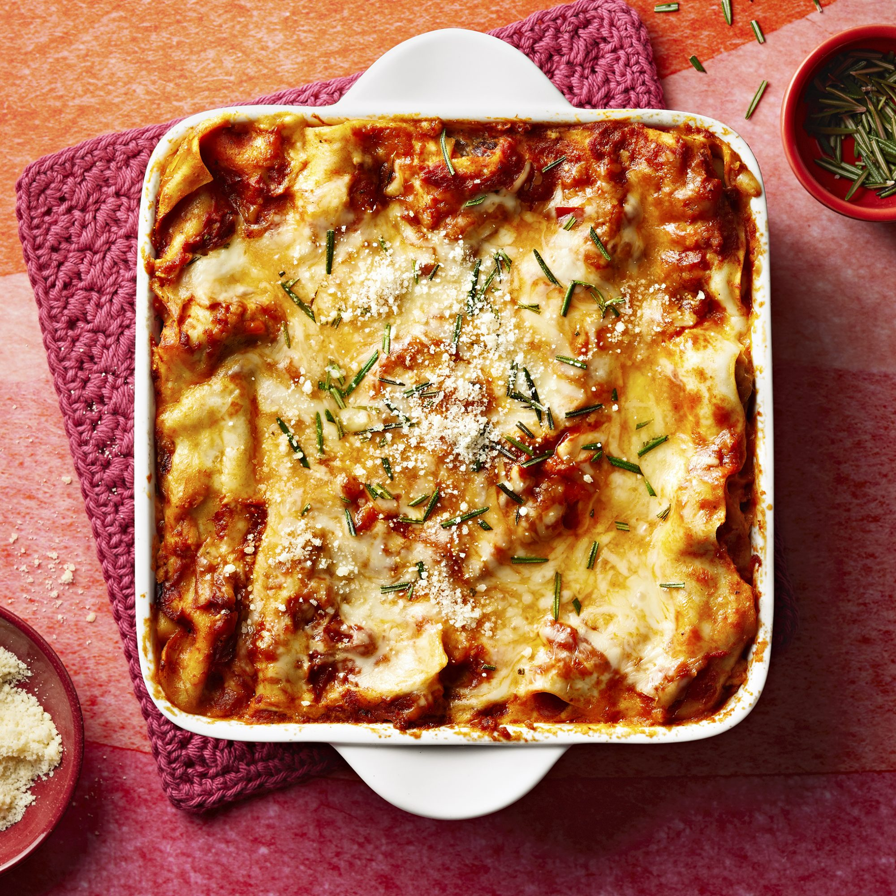

Back to Odin Recipes - Home
Lasagna

Description
Lasagna is a staple in my household. We particularly love this recipe created by
Valerie Brunmeier of Valerie's Kitchen on Allrecipes.com!
The delicious meat sauce married with the ricotta cheese and perfectly cooked noodles (not to mention the slightly crisp, burnt edges) is a
beautiful melody that will definitely call for a repeat!
Ingredients
- 1 serving cooking spray
- 1/2 lb bulk mild Italian sausage
- 3 Tbs butter
- 3 Tbs all-purpose flour
- 2 cups low-fat milk
- 1 pinch of salt
- 1 pinch of ground nutmeg
- 1 egg
- 1 15oz container part-skim ricotta cheese
- 1 Tbs dried parsley
- 2 24oz jars of marinara sauce, divided
- 1 9oz package no-boil lasagna noodles
- 1 cup chopped cremini mushrooms, divided
- 1 16oz package shredded part-skim mozzarella cheese, divided
- 1/2 cup grated Parmesan cheese, divided
Steps:
- Step 1: Preheat oven to 375 degrees F (190 degrees C). Spray a 9x13-inch baking dish with cooking spray.
- Step 2: Place sausage in skillet over medium heat and cook until browned and crumbly, about 10 minutes. Drain sausage and set aside.
- Step 3: To make bechamel sauce, melt butter in saucepan over medium heat and whisk in the flour. Allow flour and butter to cook until
light and foamy, about 2 minutes, whisking constantly. Whisk in milk, a little at a time. Whisk in the salt and nutmeg, bring sauce to
bare simmer, whisking constantly until thickened about 10 minutes. Remove sauce from heat and set aside.
- Step 4: In a bowl, beat egg and stir in ricotta cheese and parsley until thoroughly combined.
- Step 5: To assemble lasagna, pour about 1 1/2 cup of marinara sauce into bottom of prepared baking dish and top sauce with 4 lasagna
noodles, overlapping if necessary. On the noodles, layer 1/3 of ricotta mixture, followed by 1/3 of the cooked sausage and mushrooms, 1/4
of the bechamel sauce, 1 cup of the mozzarella cheese, 1/8 cup of Parmesan cheese and 1 more cup of marinara sauce. Repeat the layers
twice more ending with a final layer of noodles topped with a layer of marinara sauce, bechamel sauce, and any remaining mozzarella and
Parmesan cheeses.
- Step 6: Cover the dish with foil. Bake in preheated oven until bubbly and noodles are tender, about 1 hour. Remove foil and bake until
top cheese layer is browned, about 5 minutes. Allow lasagna to stand for 10 minutes before cutting.